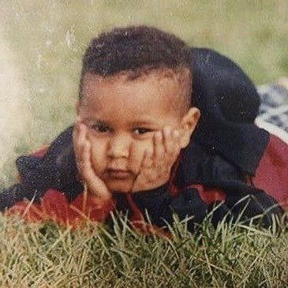

Historia
Infancia y Orígenes
Abel Makkonen Tesfaye, conocido como The Weeknd, nació el 16 de febrero de 1990 en Scarborough, Toronto, Canadá. Es hijo de inmigrantes etíopes que huyeron de la represión en su país. Creció en un entorno complicado, ya que su padre abandonó a la familia cuando él era muy pequeño, lo que llevó a su madre y abuela a criarlo. Esta experiencia familiar influyó profundamente en su vida y su música.
Desde temprana edad, Tesfaye comenzó a experimentar con drogas, iniciándose con marihuana a los 11 años y luego probando sustancias más fuertes. Su adolescencia estuvo marcada por problemas en la escuela y un estilo de vida rebelde, lo que lo llevó a abandonar sus estudios antes de graduarse.
Primeros Pasos en la Música
.jpeg)
A los 17 años, Tesfaye se mudó con amigos a un apartamento en Toronto, donde comenzó a explorar su pasión por la música. Formó un dúo de hip-hop llamado Bulleez N’ Nerdz y luego se unió a un grupo de productores conocido como The Noise. Sin embargo, fue en 2009 cuando decidió lanzar su música de manera más seria.
Reconocimiento y Colaboraciones
.jpeg)
El respaldo del rapero Drake fue crucial para su ascenso. Drake mencionó a The Weeknd en su blog, lo que ayudó a aumentar su visibilidad. A finales de 2011, lanzó otros dos mixtapes: Thursday y Echoes of Silence, consolidando su estatus en la escena musical.
Su sencillo "Earned It", parte de la banda sonora de Cincuenta sombras de Grey (2015), le valió reconocimiento mundial y una nominación al Oscar. Las colaboraciones con artistas como Ariana Grande y Travis Scott también fueron hitos importantes en su carrera.
Álbumes Exitosos

En 2015, The Weeknd lanzó Beauty Behind the Madness, que incluyó éxitos como "Can't Feel My Face" y "The Hills", alcanzando el número uno en el Billboard Hot 100. Su segundo álbum, Starboy (2016), consolidó aún más su estatus como estrella global.
En 2020, publicó After Hours, que presentó el exitoso sencillo "Blinding Lights", estableciendo récords en las listas musicales y convirtiéndose en una de las canciones más escuchadas del año.
El Ascenso en YouTube
.jpeg)
En diciembre de 2010, Tesfaye subió tres canciones a YouTube bajo el nombre de "The Weeknd". Este acto marcó el inicio de su carrera musical. La combinación de su estilo único y el misterio que rodeaba su identidad atrajo rápidamente la atención del público y los críticos. En 2011, lanzó su primer mixtape, House of Balloons, que recibió elogios por su producción innovadora y letras introspectivas.
Legado

The Weeknd ha dejado una huella indeleble en la música contemporánea. Su capacidad para fusionar géneros y explorar temas oscuros ha resonado con millones de fans alrededor del mundo. Desde sus humildes comienzos hasta convertirse en una figura icónica del pop moderno, su trayectoria es un testimonio del talento y la perseverancia.